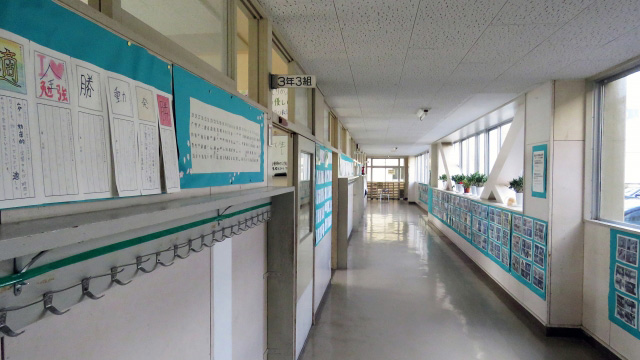

先日ある高校の生徒集会に招かれ「進路について考える」をテーマにお話をして来ました。
学校で多くの生徒に話すのは久しぶりというかほぼ初めての経験だったため少し緊張しましたが、伝えたいことは一応話すことができました。
対象は高1ということもあり、まだ入試などは遠い現実なのでどちらかというと「好きなことを一生けんめいガンバレ」的な軽めの内容でした。
もしかすると生徒や先生たちは、私が塾講師なのでもっと受験一辺倒の「勉強バリバリ」の話を期待していたのかも知れませんが、私としては高校生として広い関心をもつことのほうが大切と考えての内容でした。
ところで私が気になったのは少し別のところにあります。集会所（講堂）に集まった生徒たちに先生方がけっこう厳しく注意しているのです。
集合しザワついている生徒たちに向かって担任らしい先生たちが「静かにしなさい」と声を張り上げています。
私は壇の脇でしばらく立って様子を見ていたのですが、生徒たちはまだ高1らしい幼さを残しているもののそれほど騒がしいとは感じませんでした。会が始まる前の自然なザワつきに見えたのです。
司会の先生がマイクをもち、いよいよ私の出番かと思うと、先生は私を紹介しながら「いかに進路を決めることが大事か」という話を長々と話し、最後にちゃんと私のありがたい(!?)話を聞くようにと厳しい調子で警告します。
私はいささかとまどいを感じました。そんなに固い話をするつもりではなかったからです。
このとき私の脳裏に自分の高校時代の記憶がよみがえりました。
私が過ごした高校は週1回の朝会も生徒集会も、終始ヤジと怒号が乱れ飛ぶ喧噪の中で行われるのが常でした。朝会で校長が登壇すると一斉に生徒からピューピューっと口笛やら冷やかしの声が飛びます。飛ぶのは音だけではありません。紙テープが飛んだりします。
ある時、空中を何か物体がクルクル飛ぶのを見たことがあります。それはトイレットペーパーでした。丸まったトイレットペーパーの端が尾のようにヒラヒラと伸びながら、校長目がけて回転していきます。
それが校長の顔面近くを通り過ぎると、校長はそんな我々ヤンチャ坊主たちを穏やかな表情でながめ何事もなかったように話し始めるのです。
今どきの人たちには信じられない光景かも知れませんが、当時は旧制中学の伝統があり生徒たちの「自由な元気」を尊重する風潮があったのです。つまり先生たちもある程度の「若気の至り」を許容していたということです。一種の伝統行事なのです。
その証拠に騒ぎ立てる我々をながめる校長の目は優しく、なつかしいものを見るような目つきでした。「若いモンは元気でいいのう」とでも言いたげな好々爺のような表情です。
今なら「単に乱れているだけじゃないか」と言うのでしょうが、私たちも自由を認められているからこそ責任もあるという自由を認められているからこそ責任もあるという自覚はありました。メリハリがあったということです。
2つの方法
これらのエピソードから教育のあり方には大きく分けて2つの方法があるということです。
大ざっぱに言うと厳しくやるか、生徒の自由に任せるか。
規律を重んじて外側から訓練的に統制するのか。あるいは生徒たちの内面（善なる意思）を信じて自覚を促すのか。
これは永遠の問題かも知れません。
前者は根底に人間不信があります。人間は未熟に生まれ厳しくしつけることで一人前に育つという考えです。人間として善い行い、態度を身につけさせるには一定の型が必要であり形式を重んずるものです。
後者は人間性そのものに対する楽観的な信頼があり、むしろ他者（社会）が型を強制することで本来もっている可能性がかえって阻害されると考えます。だからなるべく自由に育てたほうが良いという発想になります。
ここまで読んでお分かりのように、どちらの考えが正しいとか間違っているとは言えず、子どもたちの年齢や成育課程、その集団のレベルや目的に応じて教育（訓練）法は変わるものだからです。
そしてこの2つの教育手法は学校においても時代と共に変遷をくり返してきました。
たとえば戦時中は「厳しく統制」、戦後しばらくは「自由放任」、そして校内暴力などが起こった70年代後半からは「管理教育」という統制型。21世紀に入ってからは再び「自主性重視」の時代が続き最近は学校や地域によってマチマチながら「やや統制」に戻るという具合です。
厳しくしつけるほうを「統制型」、自主性重視を「放任型」と呼ぶとすれば、一般的には生徒の意識レベルの高い学校は放任型で意識レベルの高くないほうは統制型の指導になりがちといえます。
意識レベルと学力レベルは比例するので、いわゆる偏差値の高い学校ほど自由放任になり逆は厳しく統制するケースが目立ちます。
あと公立よりは私立のほうが基本的に、生徒の服装やマナーについてうるさく指導し校則も厳しいのが通例です。私立のほうが統制的ですがしかしこれも意識レベルの高い学校になるほど「放任」となります。
そういう事情もあり学校によっては教師が「ウチに来る生徒はレベルが低いのだからガンガンしつけなきゃダメだ」という発言になるわけです。
生徒の「善」を信じること
しかし時代は変わりつつあります。
今は学校の「レベル」によって生徒の扱いを統制したり放任する使い分けは必要ないと感じます。なぜならどこも真面目で大人しい生徒が増えているからです。
これは若者全般に言えることで、今どきの若者は昔より優しくなっていると感じます。
悪くいえば元気がない。若者らしい覇気に乏しい。良くいえば真面目で優しく大人しい。
だからこういう時代に教師が頭ごなしに生徒を縛りつけるような指導はふさわしくない。むしろ今の子どもたちには励まし自信をもたせ、もっと堂々と自分を主張させるような対応こそが必要ではないか。
常々私はそう感じていたので、先の集会での先生たちの強圧的な態度が気になったのです。
そこで後日、私が招かれた学校の先生方と話す機会があったときその話題をもち出してみたわけです。すると大方の先生が「そうなんですよ。もっと生徒の自主性を尊重したいと思うのですが先生たちの中には色々な考えの人もいて･･･」と言うのです。
マァ、学内でも意見が分かれているということなのでしょう。
生徒（若者）は確かに未熟です。マナーやしつけを厳しくすることは時として必要な指導であると思います。
ただ、注意すべきは一律に規則（マナーやルール）に従わせるやり方には大きな弊害もあります。一言でいえばそれは形式主義におちいることです。形式主義のいちばん恐い面は、表面（形）だけ取りつくろい内実をおろそかにすること。
つまりうるさく言われるから表面だけ大人しくして、心はうわの空あるいは反動として隠れて悪さをすることになりかねないからです。もっと悪いことには自分でものを考えない（考えられない）人間になることです。これが一番恐いのです。
今ほど「自分の頭で考え新しい発想をする人間」が求められている時代はありません。
そう考えると「統制型」の指導の危うさが浮きぼりになります。
教師自らの発想の転換がいま必要なのかも知れません。そういえば先生方との話し合いで次のように言う先生がいました。
「先生の中には厳しく注意しさえすれば役目を果しているのだと思いこんでいる人も多い。」
ベテランの先生の中には、なかなか言うことを聞かない生徒たちを相手にしてきた経験から、とにかく厳しく取り締まることこそ教師の努めと得心している人も多いのでしょう。そして長い間に管理一辺倒の教師になってしまったのでしょう。
これは一種のワナなのです。というのも一律に従わせるほうが実は教師にとっても楽だからです。生徒個々人をしっかり見てその潜在能力を伸ばすことは大変手間もかかり困難な仕事となります。
しかし「教師のダイゴ味」もまたそのような困難な道を経て得られるものだと知ればどちらの道を選ぶべきか明らかです。
先生方に分かって欲しいこと。
それは教師は管理者であってはいけないということ。
たとえ時間はかかっても生徒の「善」を信ずるということです。甘やかせと言ってるのではありません。
ただ、教師たる者人間の善性を信じることなくしてどうして人を導くことができるのかということです。